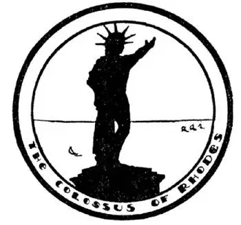

49
A “Once-Was” Country
昔日辉煌的小亚细亚

WE call a small boy a “minor” until he grows up. The corner of Asia on the other side of the Bosporus is only a small part of Asia, so we call it Asia Minor. Asia Minor does not touch Europe, although it comes so close to it in two places that a giant could stride across. One of these crossings is the Bosporus; it is only about half a mile wide. The other crossing, called the Dardanelles, is only about a mile wide at the narrowest point. People have swum across the Dardanelles, and floating bridges have been made here by tying boats together, but there are now no bridges from Asia to Europe, and men and animals have to be carried across in boats if they want to get from Asia to Europe or from Europe to Asia.
Asia Minor is a “Once-was” country. It once was the richest part of the whole World.
Croesus, who once was the richest man in the World, lived in Asia Minor.
Helen, who once was the most beautiful woman in the World, was stolen away from her home in Greece and brought to a place called Troy in Asia Minor. Here the Trojan War was fought on her account.
Homer, one of the greatest story poets who ever lived, was said to have been born in Asia Minor.
St. Paul—the Apostle—was born in a little town in Asia Minor, a town called Tarsus, where he made tents for soldiers.
You have probably heard of the Seven Wonders of the World. They were supposed to be the seven most wonderful things made by the hand of man in Ancient Times. Three of the Seven Wonders were in Asia Minor:
The Temple built to the Goddess Diana was one of these wonders. This Temple was at Ephesus in Asia Minor, and silversmiths made little copies of this wonderful temple to sell as souvenirs to visitors. St. Paul preached against Diana, for whom the Temple was built, because she was a heathen goddess. The silversmiths at Ephesus who made a living out of their souvenirs of the Temple were afraid St. Paul would hurt their business, so they tried to mob him. Nothing is now left of this wonderful Temple of Diana except the floor, and the silver souvenirs have all disappeared; but the letters which St. Paul wrote to men at Ephesus are still read by millions of people, for they are in the Bible.
The greatest tomb in the World was in Asia Minor. It was built by a woman named Mrs. Mausolus, for her husband, Mr. Mausolus. This was another Wonder of which little is left. And yet nowadays we call a very handsome tomb a “Mausoleum” after this tomb of Mausolus.
There is a little island off Asia Minor, called Rhodes. A huge brass statue of the Sun God was built there. It was called The Colossus of Rhodes, for Colossus means huge. It was as tall as a ten story house. This was a third Wonder, but an earthquake upset the statue and its pieces were sold to a junk dealer.
Almost all of the old glory of Asia Minor has gone. We can see the ruins of the wonderful old buildings, but most of the houses now, except those in a few big cities, are made of mud with one door and no windows, and grass often grows in the mud on the roofs.

An earthquake upset the statue into the sea
一次地震把铜像倾倒海里了
Asia Minor now belongs to Turkey—in fact, it is about all there is left of Turkey except Istanbul, although before World War I, Turkey owned much more land.
You have probably seen Angora cats—beautiful cats with long hair and bushy tails. They come from Angora, the capital of new Turkey. In the country round Angora is raised a peculiar kind of goat which has long silky hair. The hair from this Angora goat is used to make lovely rugs and shawls which can be bought here in America. Mohair suits which men wear in hot summer weather because they are so thin and cool are made of Angora goats’ hair—if genuine.
In Asia Minor is a very crooked river that flows lazily along to the sea, turning this way and that way as if it had no particular place to go. Its name is the “Meander.” So when a boy goes lazily along to school, turning this way and that, or when he goes along on an errand and does not go straight there but wanders along as the Meander goes to the sea, we say he “meanders.” Girls sometimes “meander” too.
Figs grow in the valley of the Meander River and dates grow in many parts of Asia. Figs and dates are brought on camel back across to a beautiful city called Smyrna on the Mediterranean Sea, and from there are shipped to us in America. You can probably get at your corner grocery store a package of Smyrna figs or “Dromedary Dates” that have been picked far away in Asia, carried by caravan to Smyrna, and shipped here. Another thing sent us from Smyrna is sponges. Sponges grow in the sea near Asia Minor. Naked men dive for the sponges and pull them off the rocks, where they grow on the bottom of the sea. They gather as many as they can at a time, as long as they can hold their breath.
【中文阅读】
在一个小男孩长大成人之前，我们都称之为“小”。在博斯普鲁斯海峡的另一边是亚洲的一个角落，这个角落是亚洲很小一块地方，我们称之为“小亚细亚”。小亚细亚与欧洲并不相连，不过有两处离欧洲很近，如果有个巨人，一步就能跨过去。其中一处就是博斯普鲁斯海峡，只有半英里宽，另一处是达达尼尔海峡，最窄处只有一英里宽。有些人曾成功游过达达尼尔海峡。人们在这儿将船拴在一起建成一些浮桥，但是目前在亚洲和欧洲之间还没有桥梁，人和动物也只得乘船来往于两边。
克罗伊斯国王，曾经是世界上最富有的人，就居住在小亚细亚。
海伦，曾经是世界上最美丽的女人，被人从希腊的故乡偷走，带到小亚细亚一个叫特洛伊的地方。因为海伦的缘故发生了特洛伊之战。
荷马，是迄今为止最伟大的叙事诗诗人之一，据说就出生于小亚细亚。
圣保罗——那个传福音的使徒——出生在小亚细亚一个叫“塔尔苏斯”的小镇。在这个小镇，保罗曾以为士兵制作帐篷为生。
你可能听说过世界七大奇观，它们被认为是古代人工建造的世界上七个最奇妙的景观，七个当中就有三个在小亚细亚。
为女神狄安娜建造的神庙就是这七大奇观之一。这座神庙在小亚细亚的以弗所。当地银匠仿照这个神庙制成小型复制品当做纪念品卖给游客。使徒保罗讲道公开反对狄安娜，因为她是异教徒信仰的女神。以制售神庙纪念品为生的以弗所的银匠们担心保罗会影响自己的生意，于是他们就设法围着保罗起哄。现在，除了光秃秃的地面，那个令人惊叹的狄安娜神庙已荡然无存，那些银制纪念品也无影无踪了；而保罗在以弗所写给众人的书信仍有千千万万的人在阅读，因为这些书信都收录在《圣经》里。
全世界最宏伟的陵墓在小亚细亚，它是由一位名叫摩索拉斯夫人的妇女为她的丈夫摩索拉斯先生修建的。摩索拉斯陵墓是另一个世界奇观，现在也无迹可寻了。然而，现在凡是较为堂皇的陵墓我们都以这个陵墓的名字来称呼。
离小亚细亚不远有一座小岛，名叫“罗得岛”。那儿建有一座巨大的太阳神铜像，被称为“罗得岛巨像”，它有十层楼那么高，也是一大奇观。但是，一次地震使铜像倾倒了，铜像碎片后来卖给了废品旧货商。
小亚细亚昔日的辉煌几乎都逝去了，我们现在能看到的只是那些古代宏伟建筑的遗迹。现在的小亚细亚地区，除了少数大城市，大多数的房屋，都是用泥土建的，只有一扇门，没有窗户，屋顶上的泥土里常常长出绿草。
现在，小亚细亚地区属于土耳其——事实上，除了伊斯坦布尔，土耳其国土差不多就是以前的小亚细亚。尽管第一次世界大战之前，土耳其拥有多得多的土地。
你很可能见过安哥拉猫——安哥拉猫很漂亮，有长长的毛和毛茸茸的尾巴，它们产自新土耳其的首都安哥拉。安哥拉的周边地区饲养一种奇特的山羊，羊毛又长又柔软，可以用来制作精美的小地毯和披肩，在美国也可以买到。男人在炎热的夏季穿的马海毛衣服，就是由安哥拉山羊毛制成的，因为这种衣 服——如果真是这种羊毛制成的，就又薄又凉爽。
在小亚细亚，有一条弯弯曲曲的河流，慢悠悠地流向大海，一会儿向这边转个弯，一会儿向那边转个弯，好像漫无目的地游荡，这条河流的名字叫“曲流河”。于是，当一个小男孩懒洋洋地去上学，一会儿这儿逛逛，一会儿又那儿逛逛，或者，让他跑腿时，不是直接去办事而是到处溜达像曲流河流向大海那样，我们就说他在“曲流”，女孩有时也“曲流” [1] 。
曲流河流域生长无花果，亚洲许多地方生长海枣。无花果和海枣都是由骆驼运到地中海沿岸的一座名叫士麦那（现在叫伊兹密尔）的美丽的城市，再从那儿装船运到美国。在美国，你可以在街头杂货店买到一袋“士麦那牌”无花果或一袋“单峰骆驼牌”海枣。这些无花果和海枣都产于遥远的亚洲，由商队运到士麦那，再用船运到美国。另一种从士麦那运到美国的东西是海绵，海绵生长在小亚细亚附近的海里。光着身子的男人潜入海底，从海底的岩石上采摘海绵。只要能屏住呼吸，他们就一次采集尽可能多的海绵。